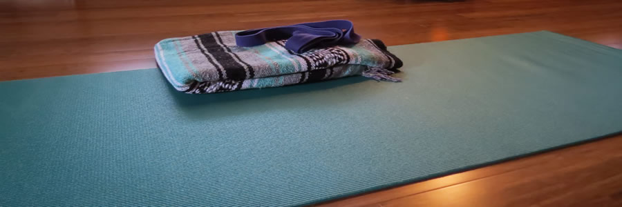

Yoga Classes
- Gentle Hatha Yoga
- Intended for beginners and anyone wishing a grounded foundation in the practice of yoga, this 60 minute class of poses and slow movement focuses on asana (proper alignment and posture), pranayama(breath work), and guided meditation to foster your mind and body connection.
- Vinyasa Yoga
- Although designed for intermediate and advanced students, beginners are welcome to sample this 60 minute class that focuses on breath-synchronized movement-- you will inhale and exhale as you flow energenically through poses.
- Restorative Yoga
- This 90 minute class features very slow movement and long poses that are supported by a chair or wall. This calming, restorative experience is suitable for students of any level of experience. This practice can be a perfect way to help rehabilitate an injury.